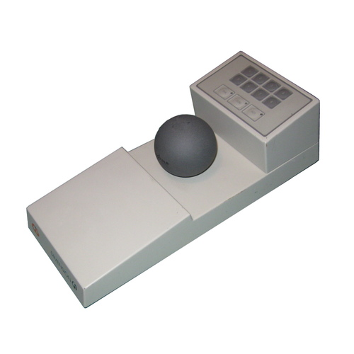

DLR Control Ball
The first 6-DOF force-sensing ball: push, twist, and pull your way through 3D space — built for robots, launched in orbit, and still on desks today

Overview
The DLR Control Ball was the first 6-degree-of-freedom (6-DOF) force/torque sensor ball, developed at the German Aerospace Center's Institute for Robotics and Mechatronics beginning in 1981. A 6-axis force-torque sensor (measuring 3 force and 3 torque components) was integrated into a plastic hollow ball about the size of a tennis ball. Slight hand pressure on the ball produced translational and rotational displacements that were translated into motion speeds in 3D space. The user's hand rested on the ball; subtle push/pull/twist motions provided simultaneous control of all six degrees of freedom (X, Y, Z translation + pitch, roll, yaw rotation) without gross arm movement.
The first version used strain gauges (~$8,000). By 1985, a cheaper optical measuring system using six one-dimensional position detectors was developed. The device was patented in Germany (1981), Europe (1982), and the USA (1983). It was used in the ROTEX space robot mission aboard Space Shuttle Columbia (1993) — the first remotely teleoperated robot in space — where an astronaut used a Control Ball to command a robot arm in the shuttle's payload bay.
The commercial version was called Dimension 6 / Geoball (1988, by CiS Graphics, ~$3,000, named 'Product of the Year' in the USA). In 1993, the refined SpaceMouse Magellan was launched and eventually licensed to Logitech, becoming the 3Dconnexion SpaceMouse — still in production today and standard equipment on CAD workstations worldwide. Only a few hundred original Dimension 6 systems were sold, making it a rare collector's item with a direct line to one of the most enduring niche input devices in computing history.
Deep dive
Unlike position-sensing devices (mice, joysticks, Isotrak) that measure where something IS, the Control Ball measured what forces the user APPLIED. The hand rested on a stationary ball; pushing lightly forward translated the viewpoint forward in 3D space, twisting clockwise rotated it. All six degrees of freedom could be controlled simultaneously — a pilot metaphor of intuitive, strain-free spatial navigation. This isometric approach meant no desk space was consumed by movement, no arm fatigue from sweeping gestures, and no need to switch between translation and rotation modes.
The first prototype (1981) used strain gauges on an inner structure, costing approximately $8,000 to produce. The breakthrough was the 1985 optical system: six one-dimensional position detectors (LED + photodiode pairs) measuring the displacement of a central element suspended by springs, dramatically reducing cost. This optical approach enabled the commercial Dimension 6 / Geoball (1988) at ~$3,000. The technology was licensed to Logitech in the 1990s, becoming the SpaceMouse product line. Today's 3Dconnexion SpaceMouse uses essentially the same isometric 6-DOF principle in a compact puck form factor, and is sold in the millions to CAD professionals.
In 1993, during Space Shuttle Columbia mission STS-55, the DLR's ROTEX experiment demonstrated the first remotely controlled robot in space. An astronaut aboard Columbia used a Control Ball to teleoperate a small robot arm mounted in the shuttle's payload bay, while ground controllers in Oberpfaffenhofen also commanded the same arm with signal delays. The Control Ball's intuitive 6-DOF control was essential — in microgravity, the isometric design meant the astronaut's hand didn't need to move, just apply pressure, making it usable without anchoring the body.
The HCI Museum already features the Polhemus 3Space Isotrak (1987), a 6-DOF electromagnetic position tracker. These devices are complementary, not redundant. The Isotrak answers 'where is a sensor in space?' — it's for tracking. The Control Ball answers 'what forces is the user commanding?' — it's for deliberate input. They represent two fundamentally different relationships between human movement and machine: one measures position passively, the other reads force as an intentional command.
Team & pioneers
- DLR (Deutsches Zentrum für Luft- und Raumfahrt). German Aerospace Center, Institute for Robotics and Mechatronics, Oberpfaffenhofen. Lead developer of the Control Ball technology
- Prof. Dr. Gerd Hirzinger. Director, DLR Institute for Robotics and Mechatronics. Led the ROTEX space robot program
- CiS Graphics Inc.. West German company that commercialized the Control Ball as Dimension 6 / Geoball under DLR license (1988)
- Logitech / 3Dconnexion. Licensee of the SpaceMouse technology since the 1990s; continues to produce SpaceMouse devices for CAD professionals